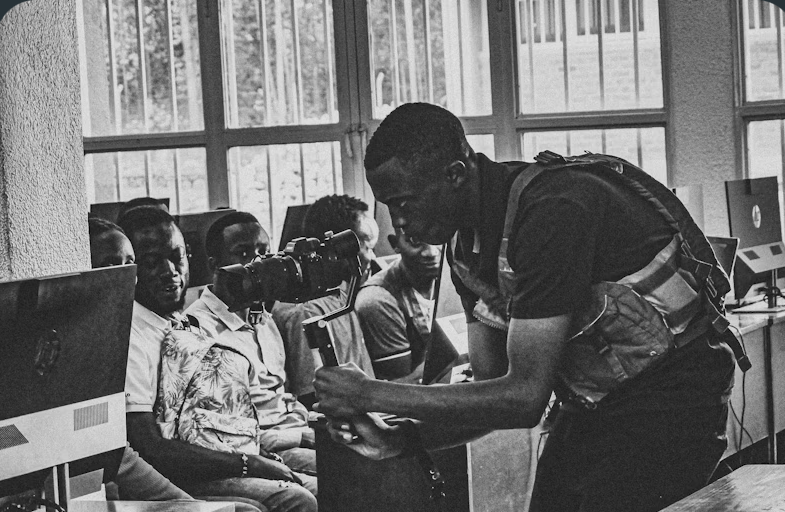
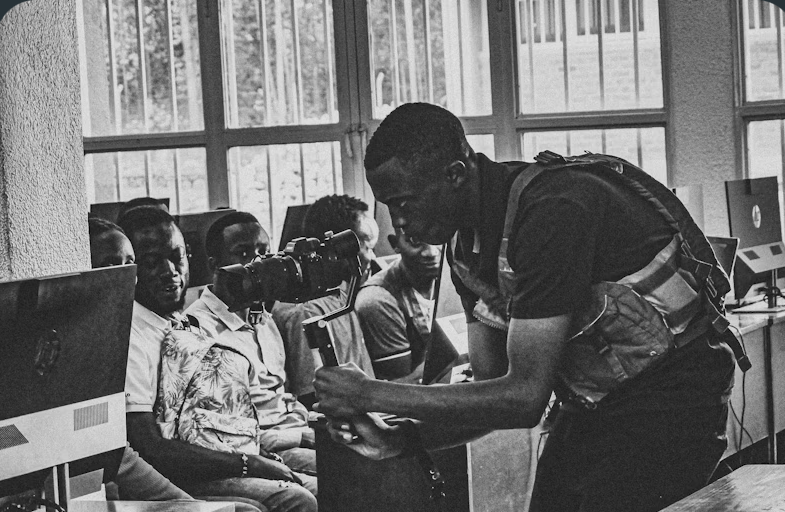

Dalam upaya meningkatkan keahlian dan profesionalisme sumber daya manusia PT Permata Graha Nusantara (PT. PGN Mas) di bidang kearsipan yang kedua kalinya bekerja sama dengan Yayasan Pendidikan dan Pelatihan Kearsipan (YPPK) mengadakan bimbingan teknis kearsipan mengenai Preservasi Arsip tanggal 9-11 Oktober di Hotel Grand Tebu Bandung, Jl. R.E. Martadinata No. 207, Bandung.
Dalam rangka mengupayakan pencapaian untuk menciptakan sumber daya manusia kearsipan yang profesional tersebut YPPK sebagai penyelenggara dan bertanggung jawab atas kelancaran bimbingan tersebut bekerja sama dengan Arsip Nasional Republik Indonesia (ANRI) dan Asosiasi Arsiparis Indonesia (AAI) memberikan pendidikan dan praktek tentang Preservasi Arsip kepada 34 peserta dari PT. PGN Mas dengan metoda 30% teori dan 70% praktek.
Selama kegiatan kami dokumentasikan dalam foto kegiatan sebagai berikut.


 
